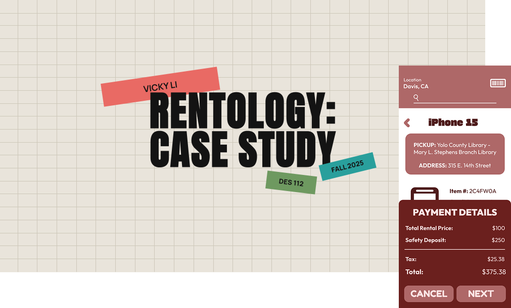
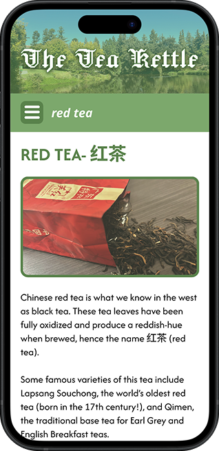
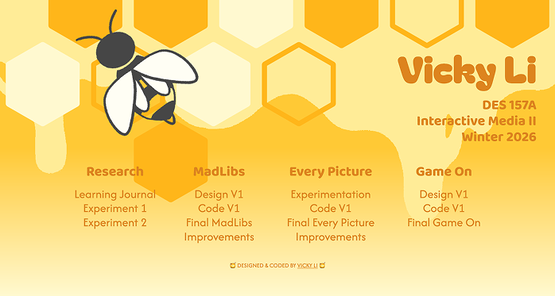

Hello, I'm a designer, coder, and a researcher currently attending the University of California, Davis as a fourth-year student. Check out some of my projects and case studies below!

An exploration of a hypothetical app addressing tech inequality and access. This served as my final project for DES 112 - UI/UX Principles.
A passion project to showcase everything I learned during my time in DES117 - Interactive Media I. Features the history and basics of Chinese tea.


My first foray into more complicated CSS and JavaScript techniques. The portal page came out quite well and also features a variety of projects from DES 157A, so feel free to check them out while you're there!